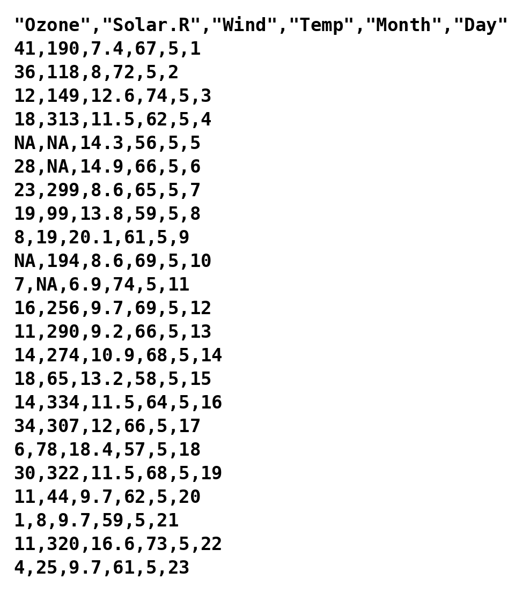

getwd() # Identifies the working directory (get working directory)[1] "/Users/tommaso/Repositories/EnvEcoStat"Programming and Data Analysis with R
data.frame objectdata.frameAn R object called data.frame corresponds to the data matrix.
Each row therefore represents a statistical unit, whereas each column represents a variable.
A data.frame looks like a matrix (matrix), but it is meant for data analysis.
For example, a data.frame can also contain non-numerical values, such as qualitative variables or missing values.
As we will see, the data.frame is generally loaded into R using, for instance, the function read.table.
The most frequent way of loading a dataset into memory is to import it from an external file.
If the data are of small / medium size (file size < 3-4 Gb), they are often saved in .csv or .txt format.
In real and more complex settings, it is possible to import the data directly from relational databases such as SQL.
It is not advisable to import data into R from an Excel file. More generally, there are several reasons to avoid Excel if the goal is to carry out a rigorous data analysis.

The active R session is open in a specific working directory, identified by the command getwd.
For example, the directory in which this code was executed is the following
getwd() # Identifies the working directory (get working directory)[1] "/Users/tommaso/Repositories/EnvEcoStat"To open the file airquality.csv, you must provide R with the path of the file, which depends on where it has been saved (on the Desktop, in the downloads folder, and so on).
# THE PATH VARIABLE MUST BE CHANGED DEPENDING ON WHERE THE .csv FILE IS SAVED
path <- "data/airquality.csv" # This is the path of the file, relative to getwd()The path of the file can also be a link, as in this case:
path <- "https://tommasorigon.github.io/EnvEcoStat/data/airquality.csv"It is also possible to change the working directory through the command setwd.
In RStudio, you can use the option More -> Set as working directory in the Files window, selecting the directory of interest.
Once the correct path of the file has been identified, to import the dataset into memory one uses, for instance, the command read.table. Therefore:
airquality <- read.table(path, header = TRUE, sep = ",")Finally, note that if the file is contained in the working directory, it is then enough to use:
airquality <- read.table("airquality.csv", header = TRUE, sep = ",")data.frameFirst of all, we are interested in understanding how many variables and how many observations are contained in the data.frame:
dim(airquality) # Equivalent to c(nrow(airquality), ncol(airquality))[1] 153 6To check that we have not made gross mistakes in importing the data.frame, we can display the first 6 observations with the command head:
head(airquality) # Equivalent command: airquality[1:6, ] Ozone Solar.R Wind Temp Month Day
1 41 190 7.4 67 5 1
2 36 118 8.0 72 5 2
3 12 149 12.6 74 5 3
4 18 313 11.5 62 5 4
5 NA NA 14.3 56 5 5
6 28 NA 14.9 66 5 6The command tail can be used to show the last 6 observations:
tail(airquality) # Equivalent command: airquality[148:153, ] Ozone Solar.R Wind Temp Month Day
148 14 20 16.6 63 9 25
149 30 193 6.9 70 9 26
150 NA 145 13.2 77 9 27
151 14 191 14.3 75 9 28
152 18 131 8.0 76 9 29
153 20 223 11.5 68 9 30airquality datasetThe airquality dataset therefore contains a total of 6 variables. Each observation is a day between 1 May and 30 September 1973, and the measurements were collected in New York.
Ozone is the mean ozone concentration, in parts per billion.Solar.R is the solar radiation, in Langleys.Wind is the average wind speed, in miles per hour.Temp is the maximum daily temperature, in degrees Fahrenheit.Month and Day identify the calendar day.To access and modify the names of the variables, one uses the command colnames.
colnames(airquality) # To access the names of the variables[1] "Ozone" "Solar.R" "Wind" "Temp" "Month" "Day" A dataset contains different types of variables.
Discrete and continuous quantitative variables are coded in R as objects of type integer and numeric, respectively.
Qualitative variables are coded in R as objects of type character or of type factor; the difference between these types will be clarified in the next sections.
Finally, dates are coded in R with the type Date.
To extract a variable from a data.frame one proceeds as in the case of lists, that is through the symbol $. The variables can be saved under any name.
A numerical variable is an R vector to all intents and purposes, therefore we can apply the functions we have already met so far
is.numeric(airquality$Wind) # Check that it is a variable of type numeric[1] TRUEclass(airquality$Wind)[1] "numeric"airquality$Wind[1:10] # First 10 elements of an R vector [1] 7.4 8.0 12.6 11.5 14.3 14.9 8.6 13.8 20.1 8.6The symbol $ is also used to create a new variable. The temperature is expressed in degrees Fahrenheit, which is not the most convenient scale for us; recalling that
(\text{``Fahrenheit''}) = 32 + \frac{9}{5}(\text{``Celsius''}),
we add to the data.frame a column with the temperature in degrees Celsius:
airquality$TempC <- (airquality$Temp - 32) * 5 / 9
head(airquality[, c("Temp", "TempC")]) # The two scales side by side Temp TempC
1 67 19.44444
2 72 22.22222
3 74 23.33333
4 62 16.66667
5 56 13.33333
6 66 18.88889Note that the operation is vectorised: it is applied to all 153 days at once, without any loop.
range(airquality$Temp) # In degrees Fahrenheit[1] 56 97range(airquality$TempC) # In degrees Celsius[1] 13.33333 36.11111The descriptive analyses of a numerical variable will be addressed in the next units; for now we limit ourselves to the manipulation of the data.frame.
dateThe variables Month and Day identify a date, and it is convenient to store that date as such. All the observations refer to the year 1973.
In R the conversion is performed by the command as.Date, followed by the format in which the date is expressed:
dates <- paste(1973, airquality$Month, airquality$Day, sep = "-")
dates[1:3] # Character strings of the form "1973-5-1"[1] "1973-5-1" "1973-5-2" "1973-5-3"airquality$Date <- as.Date(dates, format = "%Y-%m-%d")
class(airquality$Date)[1] "Date"airquality$Date[1:10] [1] "1973-05-01" "1973-05-02" "1973-05-03" "1973-05-04" "1973-05-05"
[6] "1973-05-06" "1973-05-07" "1973-05-08" "1973-05-09" "1973-05-10"Once converted into Date format, it is possible to carry out some additional operations. For example:
min(airquality$Date) # First day of the series[1] "1973-05-01"max(airquality$Date) # Last day of the series[1] "1973-09-30"Variables of type character are appropriate for text strings, that is when each field corresponds to a short text, such as a Tweet.
Qualitative variables with repeated values should instead be coded as factor. This is the case of Month: the numbers from 5 to 9 are labels, not quantities, and computing their mean would make no sense.
We therefore convert the variable as follows:
airquality$Month <- factor(airquality$Month)
class(airquality$Month)[1] "factor"In variables of type factor the various categories are listed, called levels in R.
To access the categories one uses the command levels, which lists the categories of the variable in increasing order:
levels(airquality$Month)[1] "5" "6" "7" "8" "9"table(airquality$Month) # Number of days observed in each month
5 6 7 8 9
31 30 31 31 30 The command levels makes it possible to rename the categories, for example:
airquality$Month[1:10] [1] 5 5 5 5 5 5 5 5 5 5
Levels: 5 6 7 8 9levels(airquality$Month) <- c("May", "June", "July", "August", "September")
airquality$Month[1:10] [1] May May May May May May May May May May
Levels: May June July August SeptemberThe command levels also makes it possible to merge the categories of a qualitative variable:
airquality$Season <- airquality$Month # Create a copy of Month called Season
# June, July and August are the peak months for ozone: merge them
levels(airquality$Season) <- c("Off-peak", "Peak", "Peak", "Peak", "Off-peak")
table(airquality$Season)
Off-peak Peak
61 92 To select the rows of a dataset one proceeds as in the case of matrices:
airquality[c(120, 62, 9), ] Ozone Solar.R Wind Temp Month Day TempC Date Season
120 76 203 9.7 97 August 28 36.11111 1973-08-28 Peak
62 135 269 4.1 84 July 1 28.88889 1973-07-01 Peak
9 8 19 20.1 61 May 9 16.11111 1973-05-09 Off-peakIt is of course possible (and typically much more useful) to select the observations that satisfy a given condition.
Suppose for example that we want to identify the hottest days, those above 90 degrees Fahrenheit:
airquality_hot <- airquality[airquality$Temp > 90, ]
dim(airquality_hot)[1] 14 9head(airquality_hot) Ozone Solar.R Wind Temp Month Day TempC Date Season
42 NA 259 10.9 93 June 11 33.88889 1973-06-11 Peak
43 NA 250 9.2 92 June 12 33.33333 1973-06-12 Peak
69 97 267 6.3 92 July 8 33.33333 1973-07-08 Peak
70 97 272 5.7 92 July 9 33.33333 1973-07-09 Peak
75 NA 291 14.9 91 July 14 32.77778 1973-07-14 Peak
102 NA 222 8.6 92 August 10 33.33333 1973-08-10 PeakSuppose now that we want to identify the days on which the ozone concentration exceeded 100 parts per billion:
airquality_ozone <- airquality[airquality$Ozone > 100, ]
dim(airquality_ozone)[1] 44 9head(airquality_ozone) Ozone Solar.R Wind Temp Month Day TempC Date Season
NA NA NA NA NA <NA> NA NA <NA> <NA>
NA.1 NA NA NA NA <NA> NA NA <NA> <NA>
NA.2 NA NA NA NA <NA> NA NA <NA> <NA>
NA.3 NA NA NA NA <NA> NA NA <NA> <NA>
NA.4 NA NA NA NA <NA> NA NA <NA> <NA>
30 115 223 5.7 79 May 30 26.11111 1973-05-30 Off-peakThe reason why the command produces apparently strange results is due to the presence of some missing data, coded as NA (Not Available).
The comparison NA > 100 does not return TRUE or FALSE: it returns NA, because the value is unknown. Consequently the selection returns one row for every missing value.
sum(is.na(airquality$Ozone)) # How many days lack the ozone measurement[1] 37colSums(is.na(airquality)) # The same count, variable by variable Ozone Solar.R Wind Temp Month Day TempC Date Season
37 7 0 0 0 0 0 0 0 The function is.na produces a logical matrix of the same dimension as airquality, containing TRUE if the value is missing and FALSE otherwise.
The function rowSums(matrix) produces a vector whose values are the sum of the elements of each row of the matrix.
As a consequence, rowSums(is.na(airquality)) indicates how many missing values are present in each row.
sum(rowSums(is.na(airquality)) > 0) # Number of incomplete days[1] 42The statistical treatment of missing data is not among the objectives of this course.
The easiest solution, although a potentially very dangerous one, consists simply in removing the incomplete rows through the command na.omit:
airquality_no_na <- na.omit(airquality)
dim(airquality_no_na)[1] 111 9To solve the original problem, that is identifying the days with a high ozone concentration, one can use subset, which discards the missing values:
airquality_ozone <- subset(airquality, subset = Ozone > 100)
airquality_ozone Ozone Solar.R Wind Temp Month Day TempC Date Season
30 115 223 5.7 79 May 30 26.11111 1973-05-30 Off-peak
62 135 269 4.1 84 July 1 28.88889 1973-07-01 Peak
86 108 223 8.0 85 July 25 29.44444 1973-07-25 Peak
99 122 255 4.0 89 August 7 31.66667 1973-08-07 Peak
101 110 207 8.0 90 August 9 32.22222 1973-08-09 Peak
117 168 238 3.4 81 August 25 27.22222 1973-08-25 Peak
121 118 225 2.3 94 August 29 34.44444 1973-08-29 PeakThe command subset can be used both to select the rows (observations) and to select the columns (variables).
In the second case, one can proceed through the option select:
airquality_pollution <- subset(airquality, select = c(Date, Ozone, Temp, Wind))
head(airquality_pollution) Date Ozone Temp Wind
1 1973-05-01 41 67 7.4
2 1973-05-02 36 72 8.0
3 1973-05-03 12 74 12.6
4 1973-05-04 18 62 11.5
5 1973-05-05 NA 56 14.3
6 1973-05-06 28 66 14.9Of course it is also possible to select simultaneously both the rows and the columns.
subset(airquality, subset = Ozone > 100, select = c(Date, Ozone, Temp)) Date Ozone Temp
30 1973-05-30 115 79
62 1973-07-01 135 84
86 1973-07-25 108 85
99 1973-08-07 122 89
101 1973-08-09 110 90
117 1973-08-25 168 81
121 1973-08-29 118 94attach commandIn R there exists a command called attach. Although used by many, this command is diabolical and it would be better to avoid using it.
The command attach(dataframe) makes it possible to use the variables of a data.frame as if they were present in the workspace.
This practice, however, makes the code much less readable and often leads to errors of various kinds.
Despite several protests in favour of the removal of attach by some, this command keeps (r)existing and is still used by many.
In this course no examples of use of attach will be provided, to avoid leading the student into temptation.
After all these operations, the dataset turns out to be much modified with respect to its initial version.
Running the command str again we indeed obtain that
str(airquality)'data.frame': 153 obs. of 9 variables:
$ Ozone : int 41 36 12 18 NA 28 23 19 8 NA ...
$ Solar.R: int 190 118 149 313 NA NA 299 99 19 194 ...
$ Wind : num 7.4 8 12.6 11.5 14.3 14.9 8.6 13.8 20.1 8.6 ...
$ Temp : int 67 72 74 62 56 66 65 59 61 69 ...
$ Month : Factor w/ 5 levels "May","June","July",..: 1 1 1 1 1 1 1 1 1 1 ...
$ Day : int 1 2 3 4 5 6 7 8 9 10 ...
$ TempC : num 19.4 22.2 23.3 16.7 13.3 ...
$ Date : Date, format: "1973-05-01" "1973-05-02" ...
$ Season : Factor w/ 2 levels "Off-peak","Peak": 1 1 1 1 1 1 1 1 1 1 ...Ozone is not emitted directly: it forms in the lower atmosphere through reactions that are favoured by sunlight and heat, and it is dispersed by the wind. The following questions are a first, purely descriptive look at that mechanism.
On which day was the highest ozone concentration recorded? And the highest temperature? Are they the same day?
How many days are missing the ozone measurement, month by month? Is the problem spread evenly over the summer?
Compute the average ozone concentration in each month. Be careful: the command mean returns NA if even a single value is missing.
Create a qualitative variable Windy that distinguishes the days with a wind speed above the median from the others. Then compare the average ozone concentration of the two groups. Is the result consistent with what was said above?
# Day of the maximum ozone concentration, and of the maximum temperature
airquality[which.max(airquality$Ozone), ] Ozone Solar.R Wind Temp Month Day TempC Date Season
117 168 238 3.4 81 August 25 27.22222 1973-08-25 Peakairquality[which.max(airquality$Temp), ] Ozone Solar.R Wind Temp Month Day TempC Date Season
120 76 203 9.7 97 August 28 36.11111 1973-08-28 Peak# Missing ozone measurements, month by month
table(airquality$Month[is.na(airquality$Ozone)])
May June July August September
5 21 5 5 1 # Average ozone concentration in each month
tapply(airquality$Ozone, airquality$Month, mean, na.rm = TRUE) May June July August September
23.61538 29.44444 59.11538 59.96154 31.44828 # Windy days and average ozone concentration
airquality$Windy <- factor(airquality$Wind > median(airquality$Wind),
levels = c(FALSE, TRUE), labels = c("Calm", "Windy")
)
tapply(airquality$Ozone, airquality$Windy, mean, na.rm = TRUE) Calm Windy
56.59677 25.51852